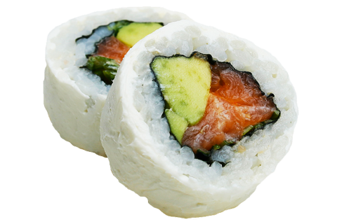

Nuestra Historia
En cada restaurante okuma sentirás una buena vibra, disfrutaras tanto de la comida como de tu tiempo con nosotros, y te preguntaras ¿pos como le hacen estos? ...pues la verdad es que no sabemos como le hacemos, no hemos descubierto el hilo negro de nada, ni nos podemos jactar de ser los mejores, pero eso si, le ponemos muchos huevos, arroz, soya, sonrisas y todo lo que se necesita para que en cualquier restaurante okuma te la pases de pelos.
Cuando estes con nosotros sabrás que el chef okuma del emprador ito IV creó todos los sushis para que sepan como a ti te gusta. Notarás como corren los chicos de okuma para que esperes el menor tiempo posible, ya sea en el restaurante, en servicio a domicilio o servicio para llevar, y que el “Peque” y “McFly” se lucieron con la decoración y los graficos de tu restaurante okuma favorito.
